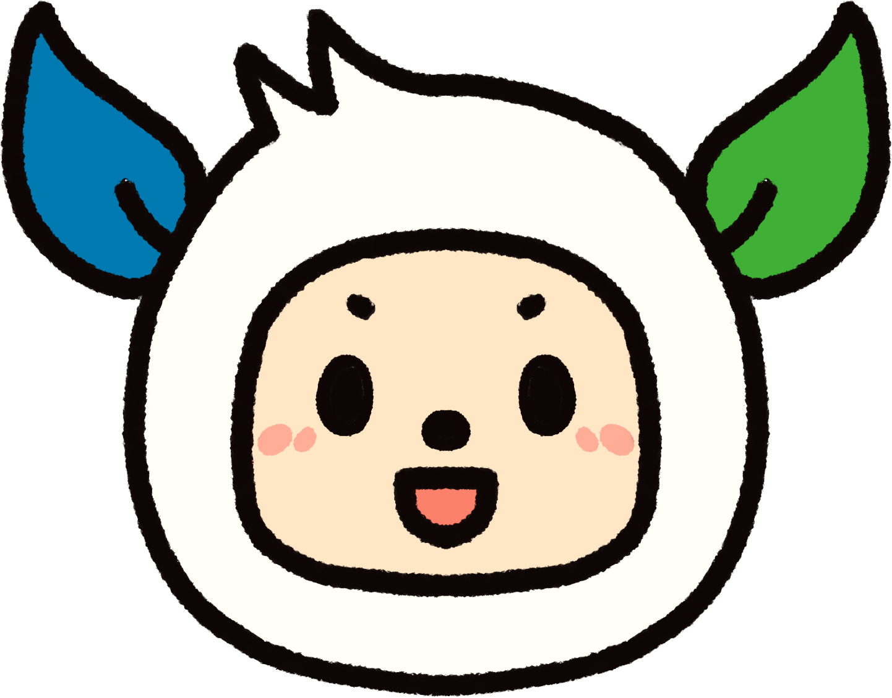
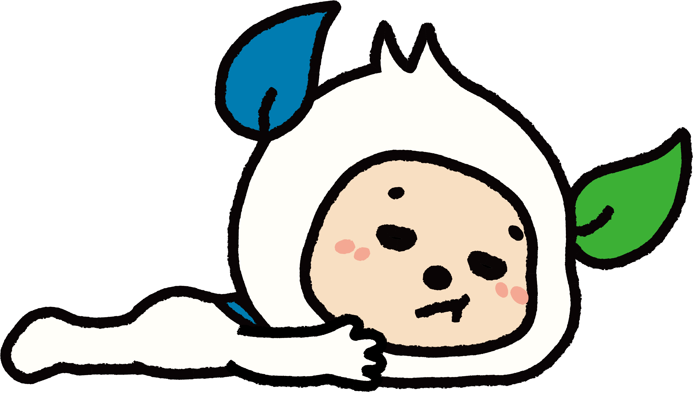
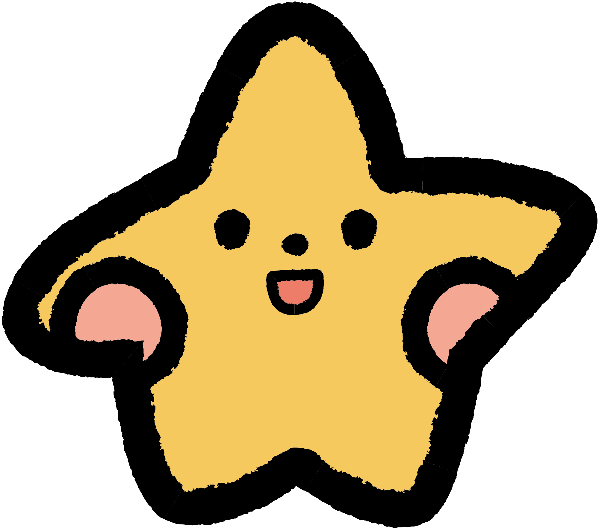
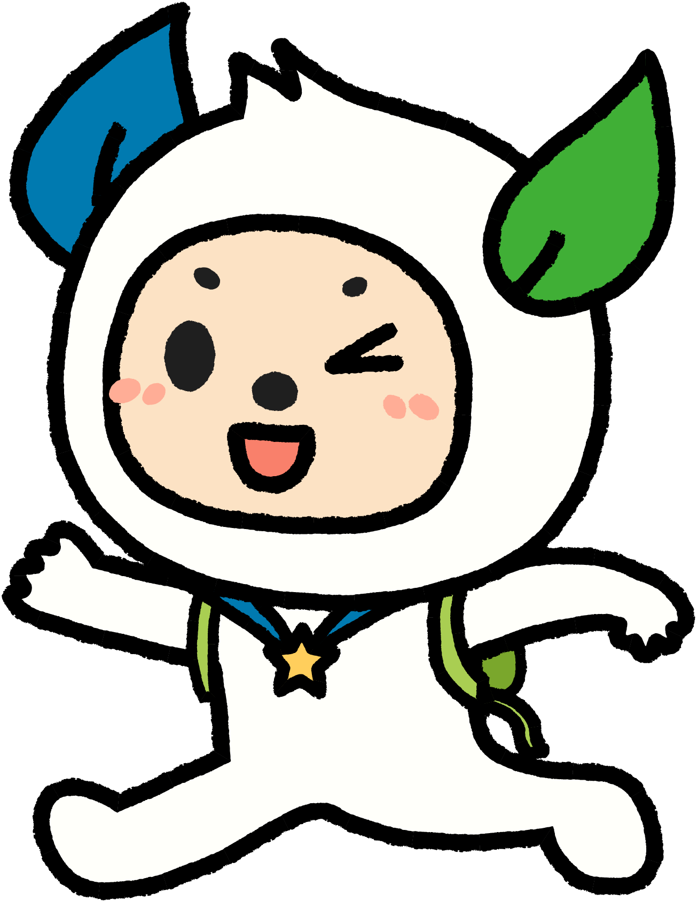

METRO TAIPEI IP
嗨，我是捷米
Hi, I'm Jamie.
CHAPTER ONE · 誰是捷米


台北捷運的
官方吉祥物。
官方吉祥物。
03

SUB-SERIES · 打工系列
「禮拜一的捷米，
需要一點奇蹟。」
打工捷米是品牌裡最有共鳴的子系列 —— 捷米不再元氣滿滿，精神抖擻，而是在社會的歷練下，被文件淹沒、雙眼無神、厭世表情，展現最真實樣子的禮拜一打工通勤人。
★ 能躺不做
★ 能做不站
★ 能趴不起
★ 翹腳放空
08